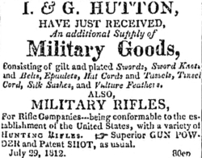

Isaac Hutton
Isaac Hutton is said to have been born in July 1766. He was the son of George and Anna Viele Hutton of New York City.
We seek information on his early life and training.
He was a silver and possibly a goldsmith in Albany beginning during the 1780s. In 1788, his personal property was valued under the third ward house of John Folsom - who is said to have employed Hutton as an apprentice and then was his partner.
Although probably living in someone else's household in 1790 and 1800, Isaac Hutton was a prominent silversmith over several decades in Albany with a substantial material legacy even today. During his career, he trained a number of apprentices. He was a founding member and treasurer of the Albany Mechanics Society. He was best known as the partner of "George Hutton" (his father and/or younger brother).
In 1791, he was a member of an Albany fire company.
In November 1797, he married Margaret Lynott. He was an elder and trustee of the Albany Presbyterian church. Both Isaac and Margaret were prominent church members. Beginning in 1799, their children were christened at the Dutch and Presbyterian churches in Albany.
In 1799, his house, lot, and shop in the third ward were valued moderately. The census in 1810, included four children, two older women, two slaves, and a free person under his household.
In 1808, he was a pall bearer and among those invited to the funeral of Henry J. Bleecker. In December of that year, his "new store nearly opposite the post office" was referenced in the Albany Register.
He was a founding director of the Mechanics & Farmers Bank in 1811. In 1813, he was chosen president of the bank Board and served until 1817.
In 1813 and afterwards, Isaac and George Hutton, merchants lived at 17 and 15 Columbia Street and their store was at several locations on streets near the river. In 1816, the directory had Isaac Hutton's "pocketbook and purse factory" at 20 State Street.
During the War of 1812, the Huttons advertized silver and other items for military use. These included things they made, accoutrements and fittings, and even gunpowder. Although initially a silversmith, by that time, Isaac Hutton's business had become more intensive and diversified. A number of traditional sources hold that younger brother George Hutton handled the business end of their enterprises.
In March 1816, he was among those advocating for the establishment of an "African Sunday School" in Albany.
Isaac Hutton died in September 1855 at the age of eighty-eight. His obituary noted that he died at Stuyvesant Landing and formerly was a silversmith of Albany.
Almost assuredly, a different "I. Hutton, minister of the gospel in Albany, proposed to print by subscription at 1s. each, a sermon entitled Weak Faith Strengthened. Those who subscribed for twelve were to have a thirteenth gratis. The work was issued in January, 1785." That notice appeared in an Albany newspaper when the subject of this sketch would have been about eighteen years old.